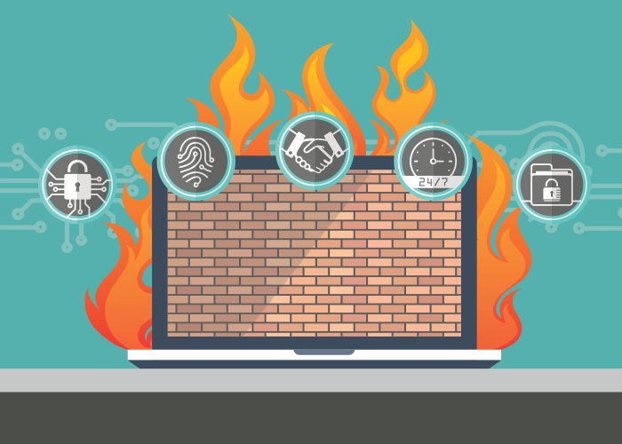

¿Que es un Firewall? |
|
| Los firewalls son programas de software o dispositivos de hardware que filtran y examinan la información que viene a través de su conexión a Internet. Representan una primera línea de defensa porque pueden evitar que un programa malicioso o un atacante obtengan acceso a su red y a su información antes de que se produzca cualquier posible daño. |
 |
| Un sistema firewall contiene un conjunto de reglas predeterminadas que le permiten al sistema autorizar la conexión (permitir), bloquear la conexión (denegar) y rechazar el pedido de conexión sin informar al que lo envió (negar). | |
Orígen |
||
| Su origen se remonta a finales de la década de los 80, los primeros hackers descubrieron que con esta nueva red podían infiltrarse en los ordenadores de otras personas, lo que llevó a una serie de importantes violaciones de seguridad y ataques de malware. | Internet necesitaba ser más segura para extenderse, por lo que varios investigadores empezaron a desarrollar las primeras versiones de firewalls en 1988 como método para el filtrado de los paquetes digitales que le llegaban a un ordenador. | |